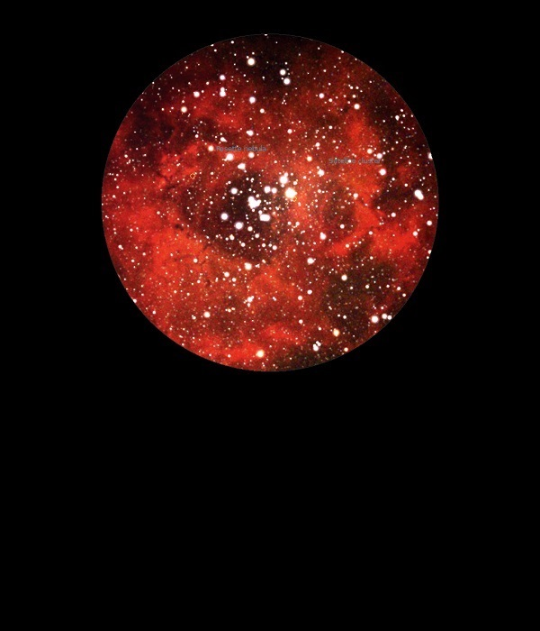

NGC 2246
H
II region in Monoceros
NGC 2246
Mag 9.0
The Rosette Nebula
09/12/13
Rosette Nebula. Large and faint but well defined
Is it my imagination or is it faintly pink!
The large and bright Open Cluster NGC 2244 sits inside it,
almost Pleiades like but with a pinky glow instead of blue
At one edge is the very faint Open Cluster NGC 2252
08/01/15
The Rosette Nebula
sits like a ring surrounding the really attractive Open Cluster NGC
2244
Through the
UHC filter the central area is well defined in 12mm
with the haze that is the Nebula filling the rest of
the FOV
No apparent
structure visible but rather a hazy sky